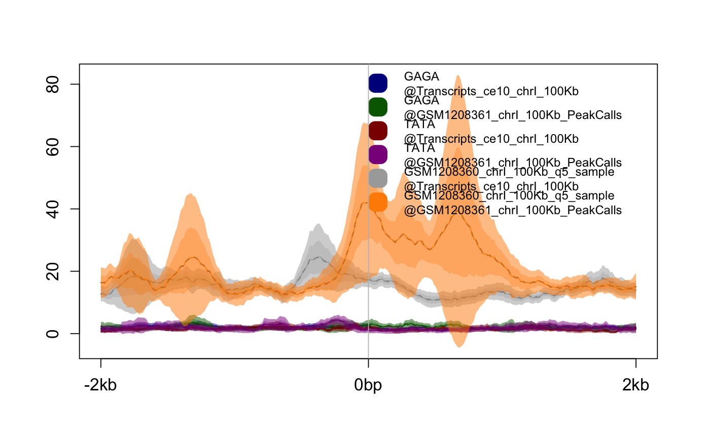
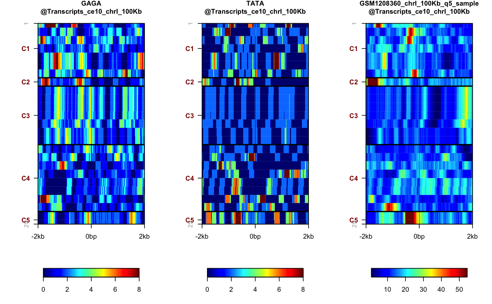
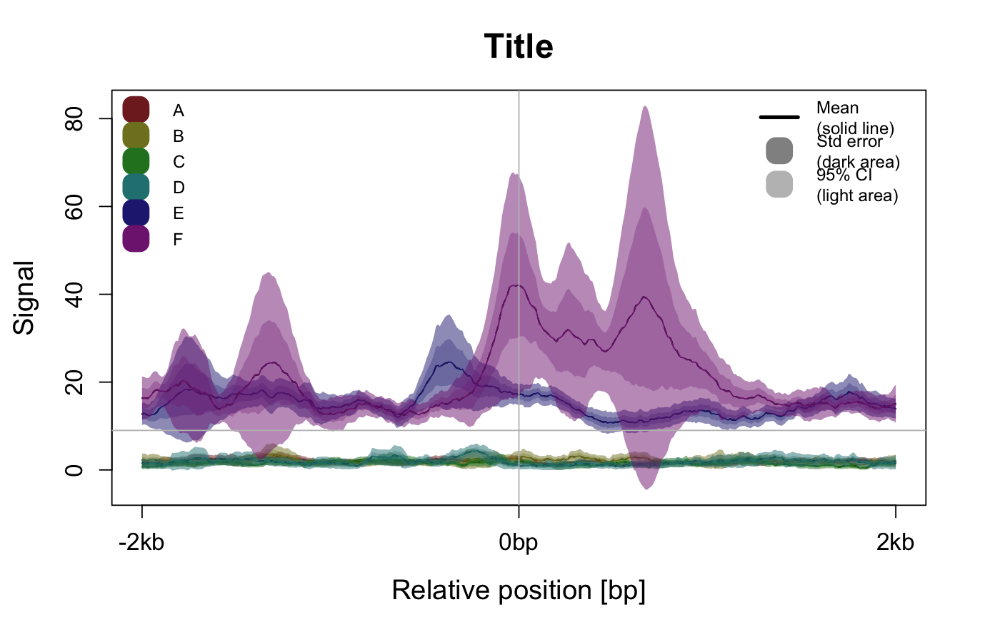
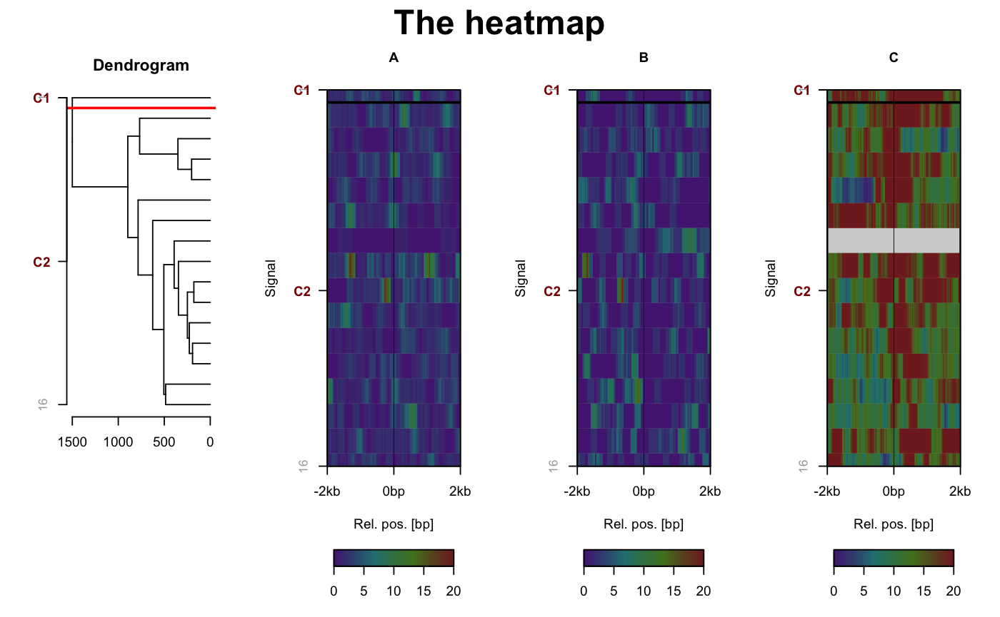

Generic plot function for SeqPlots package calsses
plot(x, y, ...) # S4 method for PlotSetPair,ANY plot(x, what = "a", ...) # S4 method for PlotSetList,ANY plot(x, what = "a", ...) # S4 method for PlotSetArray,ANY plot(x, what = "a", ...)
| x | This argument should be one of SeqPlots classes:
|
|---|---|
| y | For plotting SeqPlots classes this argument is ignored, used for
default functionality of |
| ... | Other parameters controlong the plot, see
|
| what | This argument takes a character determining if avareange
plot ( |
Returns NULL for avareange plot and cluster report data.frame
for hetamap - see plotHeatmap for details.
x = PlotSetPair,y = ANY: Method plot for signature 'PlotSetPair'
x = PlotSetList,y = ANY: Method plot for signature 'PlotSetList'
x = PlotSetArray,y = ANY: Method plot for signature 'PlotSetPair'
Other plotting functions: getPlotSetArray,
plotAverage, plotHeatmap
#load precalculated PlotSetArrays "plotset1" and "plotset2", usually these #objects are the output of getPlotSetArray function load(system.file("extdata", "precalc_plotset.Rdata", package="seqplots")) #plot with default values plot(plotset2) #Average plotplot(plotset2[1,], what='h') #Heatmap#setting plot options plot(plotset2, main='Title', xlab='Relative position [bp]', ylab='Signal', colvec=rainbow(6, 0.7, 0.5), labels=LETTERS, legend_ext=TRUE, legend_ext_pos='topright', legend_pos='topleft', ln.h=9)plot(plotset2[2,], what='h', main="The heatmap", labels=LETTERS, ord = c(3,1,2), sortrows = TRUE, clusters = 2, clstmethod = "hclust", cex.main = 20, cex.lab = 12, cex.legend = 12, xlab = "Rel. pos. [bp]", ylab = "Signal", autoscale = FALSE, zmin = 0, zmax = 20, clspace = rev(rainbow(4, 0.7, 0.5)) )#> Warning: "ord" is not a graphical parameter#> Warning: "ord" is not a graphical parameter#> Warning: "ord" is not a graphical parameter#> Warning: "ord" is not a graphical parameter#> Warning: "ord" is not a graphical parameter#> Warning: "ord" is not a graphical parameter#> Warning: "ord" is not a graphical parameter#> Warning: "ord" is not a graphical parameter#> Warning: "ord" is not a graphical parameter#> Warning: "ord" is not a graphical parameter#> Warning: "ord" is not a graphical parameter#> Warning: "ord" is not a graphical parameter#> Warning: "ord" is not a graphical parameter#> Warning: "ord" is not a graphical parameter#> Warning: "ord" is not a graphical parameter#> Warning: "ord" is not a graphical parameter#> Warning: "ord" is not a graphical parameter#> Warning: "ord" is not a graphical parameter